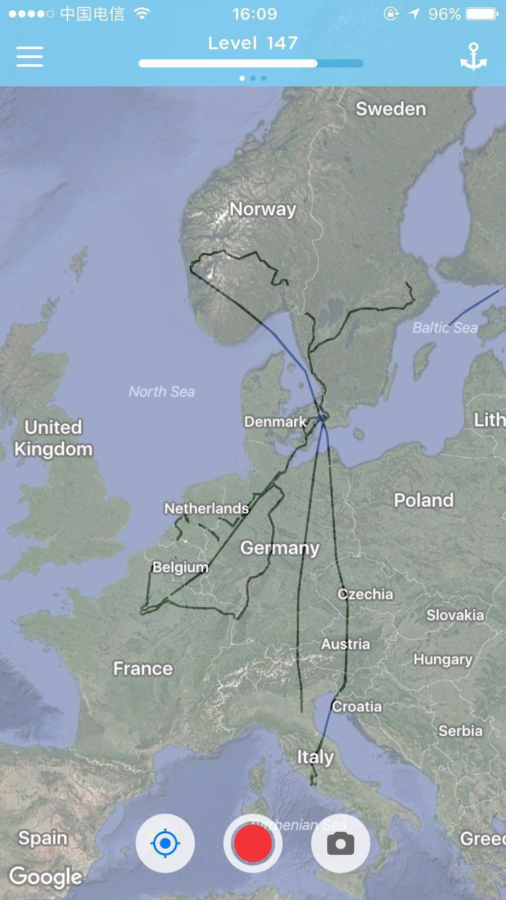
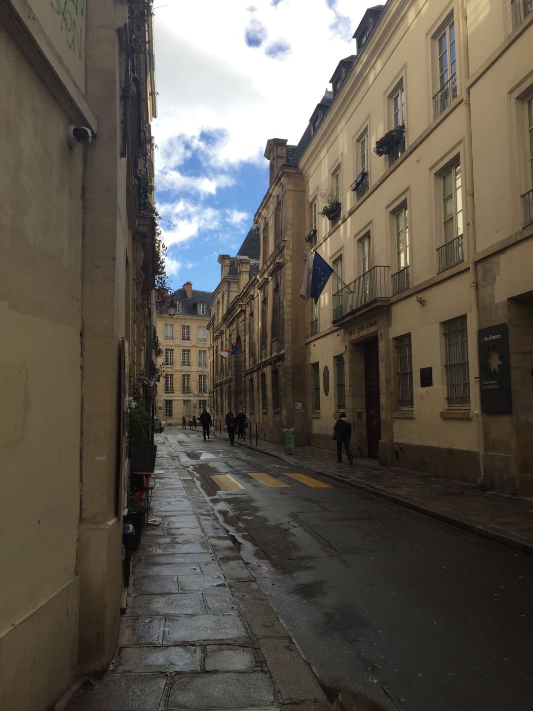
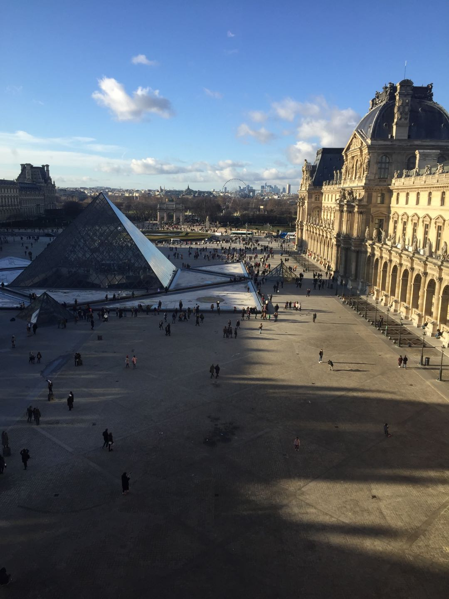
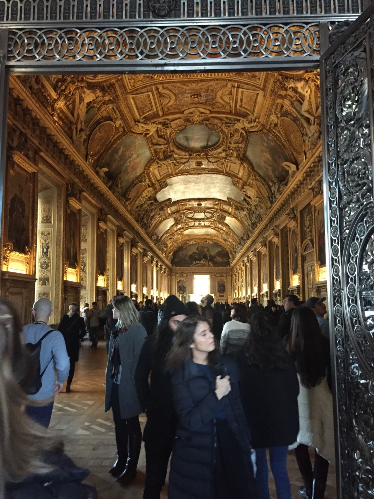
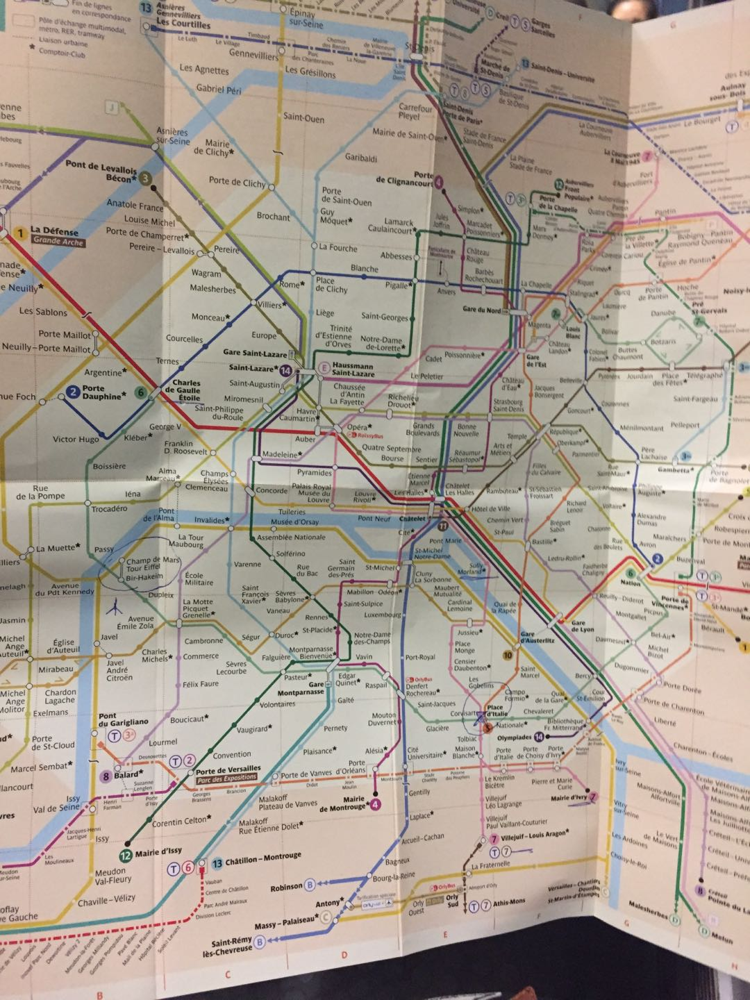
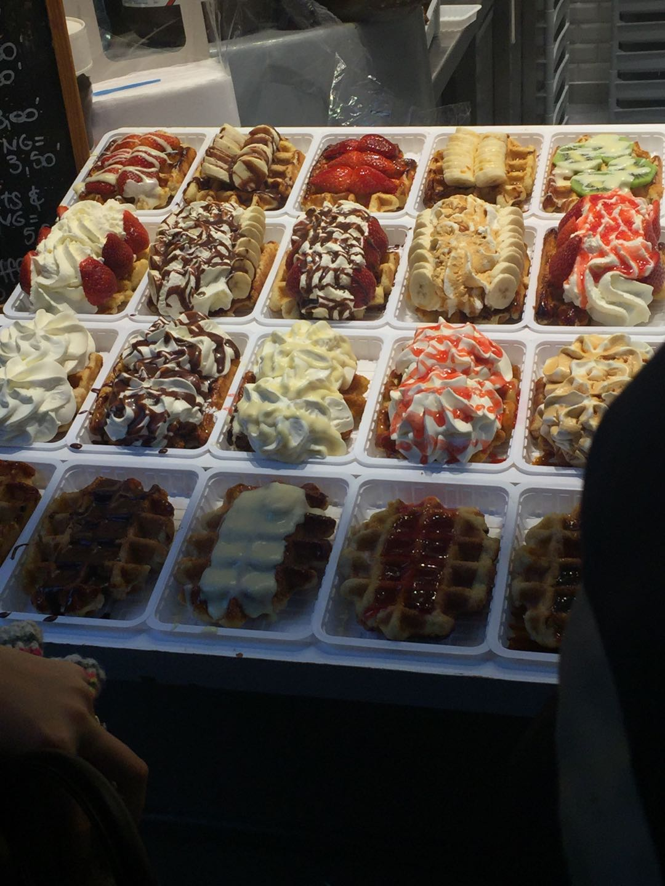
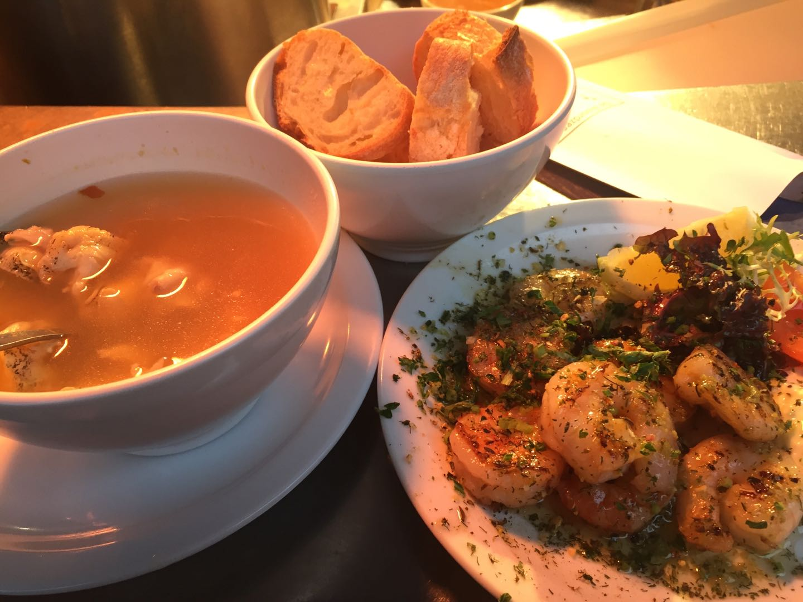
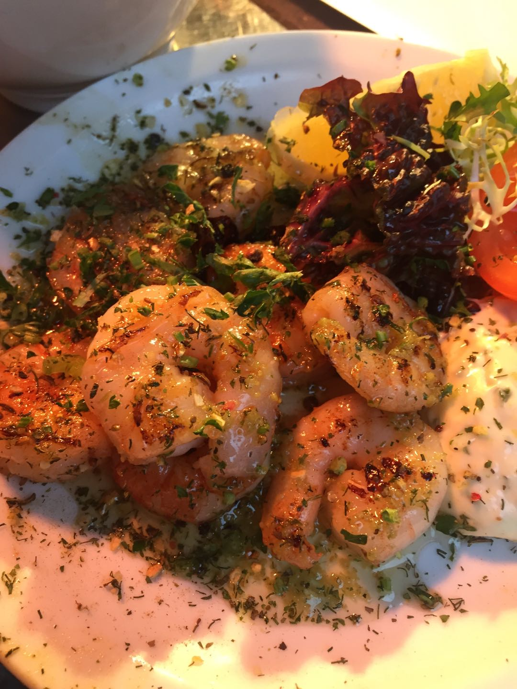

Jul 2, 2018

巴黎给我的印象就是很美，宁静又喧嚣的，古朴的美。除此之外，还感觉巴黎的地铁太过复杂，就好像一段写满了temporary hacking的代码，再就是巴黎的很多地方都可以看到中文，以及法国人真的很不喜欢用英语，每次去饭店点个菜都发现菜单是全法语的，点菜困难。我去了几个著名的地方打了卡，巴黎圣母院，卢浮宫，埃菲尔铁塔，等等。
   
走的那天在地铁上碰到一个法国女生，聊了一会发现她会好几句中文，真是厉害。她对我只在巴黎呆两天且没吃马卡龙的行为表示强烈抗议，我想了下，出门之前貌似是没怎么做功课，一般就随便走进一家看得顺眼的饭店就吃了，万幸的是貌似都挺好吃的。
当天晚上我离开巴黎前往布鲁塞尔，离开之前刚吃了一大块liver撑得要死，结果一上火车，乘务员又开始准备吃的了。这时候我才发现为什么这张巴黎到布鲁塞尔的车票这么贵，要50欧+，虽然很撑，我还是把火车上的食物都吃完了，因为真的很好吃。
布鲁塞尔是个很小很精致的城市，就像比利时的其他城市一样，我并不是非常喜欢，因为建筑物之间的距离太近了，显得有些压抑。我刚到比利时的时候，就在公车上碰到一个五六十岁的老奶奶和她的孙子，她说她去过中国，包括北京，台湾。我们聊了一会乱七八糟的事，她告诉我在布鲁塞尔一定要注意安全，特别是在这样的深夜里（我总是深夜里到达一个城市…），她说“I am not trying to scare you, but they can be very violent”，她还跟我说坐在车上不要把自己的包放下来，我看了下她，发现她真的上了车还背着包的。
布鲁塞尔吃的东西还不错，包括薯条，海鲜，巧克力以及华夫饼。
  
晚上在布鲁塞尔去阿姆斯特丹的火车上，对面坐了一个学business的比利时人，David，他说他打算做一个可以追踪各种演唱会音乐会信息的App。我问他怎么做冷启动，他说他已经拉到了很多酒吧的投资，到时候可以通过酒吧来推销他的App。说着他就打开了他的ppt给我看，然后我突然发现他就是鲁汶大学的大四学生，作为一个刚被鲁汶拒了没几天的人，我感到有点尴尬，我们就顺便聊了一会关于鲁汶大学的事。他跟我说，他缺个程序员，问我写过App没，我说我就写过个Android App，他就想叫我跟他一起创业，说他现在有几万欧的启动资金，想让我去当主程。我很怂地说我需要先完成我的Master Degree，他的反应大概就是，come on…
我发现我遇到的好多外国人对中国的了解确实挺少的，我跟David聊了很多中国的东西，比如中国的现状，文革，计划生育，GFW，我们如何在Big Brother的Watching之下无所遁形之类的，他就一直说This is crazy。其实我觉得很多事何止crazy，简直就是creepy了。
他也给我介绍了一个有趣的活动，叫做urbex，全名应该叫Urban exploration，主要目的是探索各种人造建筑，比如下水道，地下墓穴，隧道等。David说比利时有很多废弃的城堡，他最喜欢和他女朋友一起去探索那些城堡了，他说他是带着respect去探索的，并不会去改变城堡原有的样子。当然有时候这种exploration也会带来危险，比如他说他会在废弃城堡里见到吸毒的人，他们毫无respect，经常会破坏城堡，也有可能在毒品的作用下发狂从而伤害别人；比如说他也会去探索废弃的化工厂，但是去之前需要做很多的功课，去的时候一定要戴上防毒面具，不然的话很容易中毒。
我们也分享了很多我们喜欢看的剧，比如South Park。他还喜欢看Rick and Morty，海贼王，King of the hill之类的，甚至还掏出一件写着中文的“一家之主”的套头衫给我看。听了他的推荐，现在不知不觉我也看King of the hill看到第九季了 :)
David貌似是去海牙看他的女朋友，而我则要一直坐到阿姆斯特丹。
阿姆斯特丹真的很自由很美好。我到达阿姆斯特丹的时候是晚上11点，一推开Hostel的门就看到5个法国人在喝酒抽大麻，最大的92年生的，最小的97年。他们看到我很开心，请我一起喝伏特加和另一种酒，当然还有请我抽大麻。我们分享了很多事，主要是音乐上的，他们给我推荐了好多法国的本地歌手（尽管我都不认识），我们一起讨论共同喜欢的摇滚乐队，Pink Floyd, Halestorm, Guns N’ Roses, AC/DC之类。当然我们还都很喜欢Star Wars，那段时间正好是The Last Jedi上映的时候，其中有个法国人打扮得就很Jedi，他戴上帽子就很像一个真正的Jedi。后来我又被拉去了酒吧，准确地说是Coffee Shop，就是合法卖大麻的地方。那是晚上12点，阿姆斯特丹的Coffee Shop异常拥挤，我们在一家外面等了20分钟，放弃，然后在另一家门口等了10分钟，终于让我们进去了。我们在里面一起喝啤酒也喝龙舌兰，我第一次学到喝龙舌兰的正确姿势，原来需要配上盐和柠檬。Coffee Shop里挤满了人，当听到有人在唱Sweet Child O’ Mine的时候，我们都沸腾了，果然音乐是没有国界的，那真的是一个让我，即使现在回想起来依然万分感动的瞬间。喝多了之后，并不知道是大麻还是酒精的作用，我觉得我开始漂浮，朦朦胧胧中听到有个法国人跟我说他喜欢男人，我表示非常理解，我也确实觉得男人和男人呆在一起是很有趣的一件事。半夜三点多，我觉得我快醉了，就打算离开，我跟每个人拥抱说再见，然后我就走回了Hostel，一路上我看到阿姆斯特丹依然充满活力充满生机，大批的人依然在活跃在这个城市的夜里，这让我感觉非常美好。
第二天早上起来，大家都没醒，但是我得起来准备退房了，逛一逛阿姆斯特丹（阿姆斯特丹有很多很可爱的博物馆），然后晚上又要准备奔赴德国汉堡了。我想了想，写了张纸条向我的法国朋友们告别，我知道他们一定能看到这张纸条，因为我把这张纸条压在了那瓶没喝完的伏特加的下面 :D
我在汉堡住了两三天，不过大部分时间都又回到荷兰的恩斯赫德去了，因为那时候我刚被University of Twente录取，想过去看一下，而这个学校正好在荷兰与德国的边境上。我对汉堡的印象并不是很深，就记得我去的时候基本都是阴天下雨，不过德国的啤酒和食物深得我心。记得比较清楚的一件事是，我在汉堡闯红灯，侧面有辆车开过来，完全没有减速的意思，我只好很快速而又狼狈地跑到对面。这与荷兰瑞典就大不相同，荷兰瑞典的司机一定不会这么干。有好多次，我一个人站着等红灯，司机直接就停下来让我先走了，我第一次碰到这个情况的时候简直一脸懵逼。感觉这是不是跟传说中的“德国人特别遵守规则”有关系，鉴于我遇到的例子太少，也许这只是我的脑子里的stereotype吧。
后来看了一部德国电影，The lives of others（中文名愚蠢地翻译为窃听风暴），又对德国有了新的认识。
值得一提的是，汉堡到哥本哈根的火车很有趣，是一截很短的火车，开着开着就开到船肚子里去了，然后我们就下车到船上，该吃饭的吃饭，休息的休息，等船开到对岸了，我们再回到火车上，直到开到终点。

挪威从一开始就惊艳到我了，从飞机上往下看，可以看到白雪皑皑的峡湾，就像大地起伏的皱纹，那个时候，真的会感觉心灵很宁静，而且在心中升起一股对自然的敬畏。
卑尔根是个很美丽很美丽的城市，美中不足的是卑尔根每年下雨的日子往往接近300天，有“欧洲西雅图”之称，而人们无法在雨天领略卑尔根全部的美。
刚到卑尔根的时候，我准备去一家当地比较著名的餐厅吃午饭，到了之后发现那里已经没有座位了，于是就跟一个印度朋友，Pankaj，坐在一起聊了起来。Pankaj说他是来哥本哈根参加一个Docker的conference，结束之后顺便来挪威玩的，他说他在印度某high frequency trading工作，我一听他是搞IT的，就开始跟他聊了一些业界的事。他来挪威是参加了一个叫做Norway in a nutshell的项目，这个项目很棒，会带他去看挪威最美的峡湾，去划独木舟，去探险去泡温泉等等。他说他其实还有个朋友跟他一起来开会的，可是他朋友是个素食主义者，所以就不愿意和他一起来吃饭，他朋友去海洋公园看动物去了 :D 那天下雨，整个卑尔根都雾蒙蒙的，我和Pankaj在城里漫无目的地闲逛。卑尔根真的是个小城，就这样随便走走，我们已经逛完了大部分的卑尔根，包括鱼市，卑尔根古城，布吕根码头以及各个教堂。虽然是小雨，但是在小雨下淋几个小时也不是什么轻松的事，后来我们选择去喝咖啡暖一下，喝着喝着，Pankaj的朋友也过来了，这好像是我第一次跟一个素食主义者相处。他并没有显得跟我们有什么不一样，喝完咖啡之后，我和Pankaj在他面前若无其事地啃着鹿肉香肠，他也并没有什么反应，甚至还走到M记里买了一个素食汉堡。傍晚我们在某个广场分别，Pankaj和他的朋友第二天要去斯塔万格（Stavanger），而我则要留在卑尔根，希望他们一切都好。
我很幸运，第二天卑尔根的天气是个大晴天，晴天的卑尔根真的很美，我一个人在漫无目的地走着，走累了就随便坐一会，有时候在观察这里的人是如何生活的，有时候在观察远方清澈的群山，有时候只是单纯地看鸟，喂鸟。
去卑尔根不得不去的就是弗洛伊恩山，风景很美，并不是很高，大约40分钟可以到山顶，也可以选择坐索道上下山。在山顶可以俯瞰整个卑尔根，还可以看到北大西洋上的船缓缓开过。

晚上11点我要坐夜车去奥斯陆，快要夏天了，北欧的白天已经变得很长很长了，一直到晚上11点，天也没有完全黑，我一直静静地坐在湖边，享受这挪威的阳光。后来我有点后悔坐了夜车去奥斯陆，因为我突然发现，在挪威，沿途的风光是如此不同，我应该白天坐火车的，这样我就可以欣赏更多挪威的风景了。
到了奥斯陆之后，才发现为什么说卑尔根的人都会自称来自卑尔根而不是挪威 XD 因为跟卑尔根比起来，奥斯陆真的逊了好多筹。个人主观感觉就是奥斯陆好土，而且几乎每走500m就会看到一个乞讨的难民，让人感觉有些不自在。我对奥斯陆仅有的回忆就是，我在奥斯陆拍了一张魔幻的照片，我总觉得这是人类败给AI之后的，荒芜的世界，让我感到很压抑。
就好像是The Matrix里的世界，让我有种驾驶着Nebuchadnezzar冲破这些乌云直到看见太阳的冲动。
值得一提的是挪威的食物，大部分时间我都在吃M记的汉堡，一方面是因为挪威的食物太贵了，另一方面是因为挪威的食物有些真的欣赏不了，不过在卑尔根吃的鱼汉堡还是很让我怀念的。
罗马是我去过最喜欢的城市，没有之一。雄伟壮观的万神殿与斗兽场自不必说，更让我沉醉的是罗马的艺术氛围，古老的教堂和随处可见的街头艺人。其厚重的历史无处不在，比如说罗马居然没有地铁，为什么呢，因为每次一开挖的时候就会挖到各种各样的遗址，导致施工无法继续进行。罗马的食物也很诱人，披萨，冰淇淋，提拉米苏…
去罗马的时候我选择了Airbnb而不是像以前一样住在hostel里，因为像我这样不太主动开口说话的人，住在hostel里也很少遇到会一起说很多话的人，而房东则不一样，至少我可以跟本地人交流一些话题。我的房东，Alberto，是一个罗马人，还是本科生，在罗马大学读生物，他和他哥哥Dario住在一起，Dario是罗马大学的物理phd，看到他们两个之后，这是我这辈子第一次觉得，有兄弟姐妹真的是一件好事，sigh。我们一起谈论了很多有意思的事：
第一天晚上我与Alberto站着聊天，他说他从来没有跟中国人聊过天，他对中国人的所有了解都来自于附近的中国商店，他只觉得中国人似乎很沉默，然后working crazy，然后我就试着解释了一下这些现象。不过这并不是重点，重点是我们聊天的时候有一只蚊子飞来飞去，我们都在骂damn mosquito，然后开始抓蚊子，Alberto成功把蚊子抓在了手里。当他发现这只蚊子还活着的时候，他说 “Let’s save this life”，然后就一路小跑打开窗户把蚊子给放了出去。说实话，这是对我冲击挺大的一件事，从前我一直以为这种事只会出现在艺术作品里，我真的从来从来没有想过要这么做，直到今天我还经常想起这件事，想起Alberto的举动。
第二天晚上Alberto和Dario都在，我们聊了一会关于中国的事，依然是关于现状，关于计划生育，关于GFW，关于我们的隐私。特别搞笑的是Alberto去上厕所了，我跟Dario就开始瞎扯，他说自己是物理phd，我马上就说那你一定知道Richard Feynman吧，他很惊讶地问我怎么知道Feynman的，他说“not a lot of people know Feynman”，我说是某个教我的professor告诉我的。我们聊了很多关于Feynman的事，包括他如何不屑于诺贝尔奖，包括费曼讲义如何使Dario获益。后来Dario刚说完“You know Feynman says physics is like sex…”，Alberto刚好走过来说“Are you talking about sex? Ah, woman, it’s always about woman”，于是我跟Dario相视一笑。
Dario说他花了2000欧买了一辆1979年的房车，现在已经修好并且可以开了，他打算phd毕业之后开着这辆房车一直从罗马开到北极圈，然后再换一条路线开回来，他算了一下，一路上都住在他认识的人家里的话，单程大概就要开5000公里。他说他一定要去，就算到时候只有他一个人也要去，走之前我特意加了他的facebook，我对他说，你要出发的时候一定要告诉我 :)
在罗马有一个Trevi Fountain，中文世界里有叫它许愿池的。我一开始还以为是投硬币就可以许一个愿望的，但是Dario告诉我并不是这样的，他说如果你在Trevi Fountain里投下一枚硬币，那就说明你这辈子会再次回到罗马。我投下了一枚硬币，并且坚信我会再回到罗马。
(The End)
[Return to the homepage]